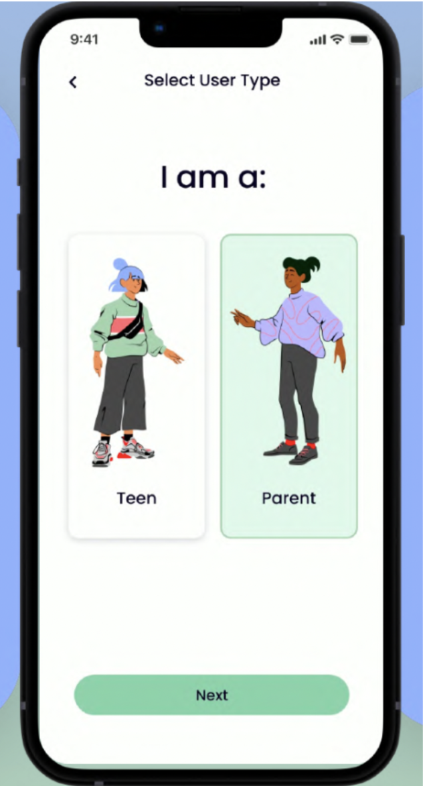
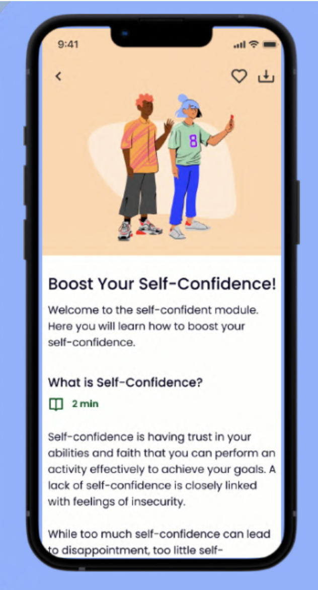
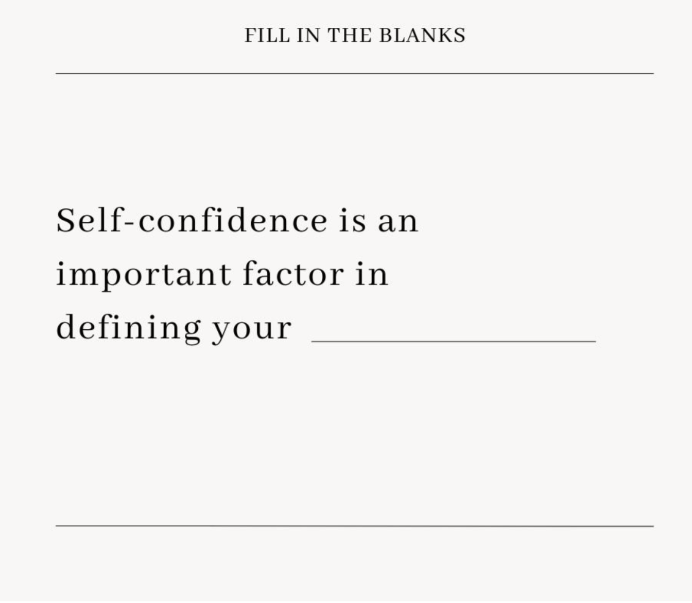
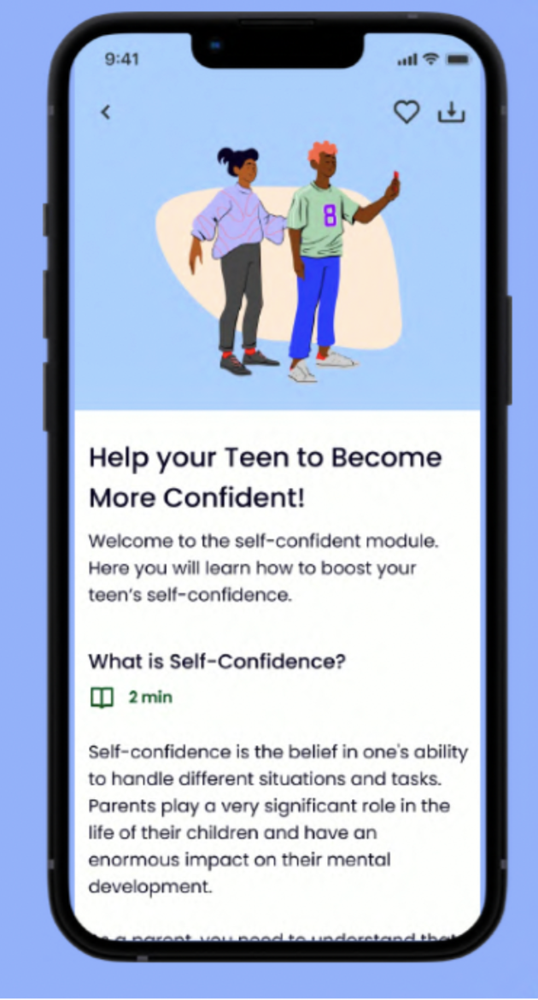

Content Testing for a Teen & Parent Mental Health App
Testing whether mental-health course content actually lands
A mental health app for teens and their parents brought me on to test the effectiveness of the content behind their mental health courses — a year-long research track applied to every piece of content the team produced.
I ran a comprehensive study combining interviews and several rounds of usability testing (comprehensive, cloze, A/B, and guerrilla testing) to understand what prospective users preferred and where they got stuck. That surfaced real usability issues in the app's content, which I paired with a competitor analysis across the mental health space to find ways to improve engagement and retention — and turned both into concrete content recommendations.
Understanding the product vision
An early round of research with beta testers (family and friends) shaped two working user profiles: teens aged 13–19 — both clinical and non-clinical, interested in self-improvement and mental health advocacy — and parents aged 35–65 looking to support their teens. Coming in as a psychologist, I already understood why early prevention through social and emotional skills matters for mental health, and how different therapeutic approaches support it — which shaped two objectives for the research together with the app's team.
Strengths & weaknesses of the current content
- How easily users interact with the content
- Whether users understand everything in it
- How the content makes them feel
Opportunities to stay engaged
- What keeps users interested over time
- Direct feedback on improvements to make

Comprehensive testing through in-depth interviews
Usability testing shows how people actually engage with content, so I recruited 2 participants for in-depth interviews. I chose comprehensive testing specifically because it's built for content that needs to work across a range of cognitive needs and abilities.
- What therapeutic words used in the content meant to them
- Which parts of the content they found difficult to understand
- Whether they understood the content, and what outcome they expected from that understanding
- Whether they could explain what they'd read without looking back or rereading it

Cloze, A/B & guerrilla testing
Cloze testing
To measure reading comprehension and keep jargon in check, I used cloze testing — showing participants a passage with certain keywords removed and asking them to fill in the blanks. I accepted synonyms and set a 75% accuracy threshold.

A/B testing
After the first round of interviews, we iterated on two new versions of the content and tested both against each other to see which users preferred, engaged with more, and found most helpful to actually implement.

Guerrilla testing
Alongside the structured tests, I ran guerrilla testing at conferences and related events — a fast way to check how quickly people outside the existing participant pool could comprehend the app's content.
Recommendations & impact
Based on the interviews and usability tests, I recommended removing and replacing several technical terms throughout the content. (Further specifics can't be shared under the company's privacy policy.)
This research track left a lasting legacy: a well-researched, comprehensive playbook the team could lean on for future content optimization.